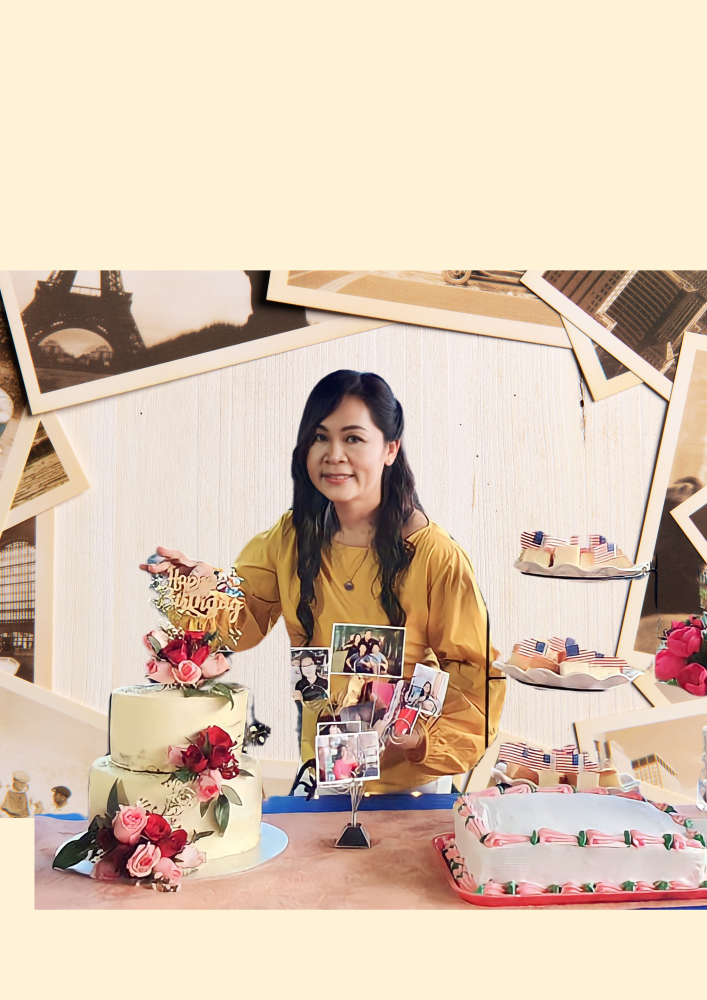
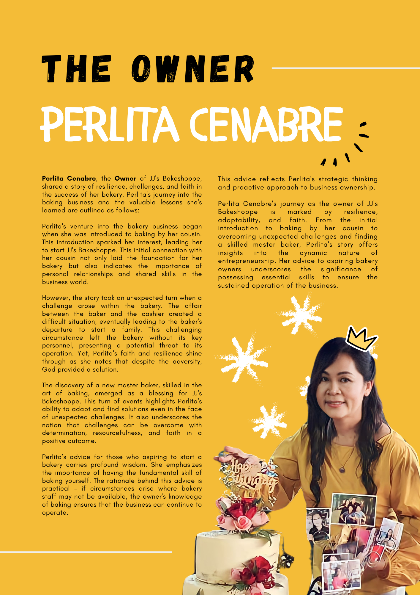
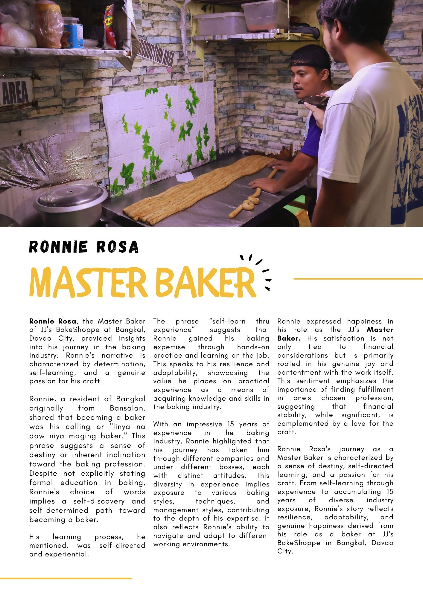

Our Story
A journey of resilience, faith, and the love of baking
The Founder's Story
Perlita Cenabre
The inspiring journey of Perlita Cenabre, the founder of JJ's Bakeshoppe, is one of resilience, faith, and unwavering determination. Her story began when she was introduced to the art of baking by her cousin—a moment that would spark a lifelong passion and lay the foundation for a beloved bakery.
A Journey of Resilience
Perlita's venture into the bakery business started with a simple introduction to baking by her cousin. This initial connection not only ignited her passion but also taught her the importance of personal relationships and shared skills in the world of business.
However, the journey was not without its challenges. A difficult situation arose when the baker and cashier became involved, eventually leading to the baker's departure. This unexpected turn left the bakery without its key personnel, creating a moment of uncertainty.
Faith and Divine Provision
Despite this setback, Perlita's faith never wavered. She firmly believes that God provided a solution at the perfect time. Through divine provision, a new master baker—truly skilled in the art of baking—emerged as a blessing for JJ's Bakeshoppe.
This turning point highlights Perlita's remarkable ability to adapt and find solutions even in the face of adversity. It serves as a testament to the power of determination, resourcefulness, and unwavering faith in a positive outcome.

Perlita Cenabre, Founder of JJ's Bakeshoppe
Perlita's Wisdom
"If you aspire to start a bakery, learn the fundamental skill of baking yourself. If circumstances arise where your staff may not be available, your knowledge ensures that your business can continue to operate."
Learn the Craft
Master the art of baking before you hire others. Your knowledge is your business's foundation.
Build Relationships
Personal connections and shared skills are invaluable in the business world.
Stay Resilient
Challenges will come, but with faith and determination, you can overcome any obstacle.
Trust in Divine Provision
When challenges arise, trust that solutions will come at the right time.
The JJ's Bakeshoppe Journey
The Beginning
Perlita Cenabre is introduced to baking by her cousin, sparking a passion that would become JJ's Bakeshoppe.
JJ's Bakeshoppe Opens
With determination and a love for baking, Perlita opens the doors of JJ's Bakeshoppe to the community.
Overcoming Challenges
A difficult situation arises when the baker and cashier become involved, leading to the baker's departure. Perlita's faith is tested.
Divine Provision
A skilled master baker is discovered—a blessing that saves JJ's Bakeshoppe and strengthens Perlita's faith.
Still Baking With Love
JJ's Bakeshoppe continues to serve the community with fresh, delicious baked goods, carrying forward Perlita's legacy of resilience and faith.
Our Values
Quality Ingredients
We source only the finest ingredients, honoring Perlita's commitment to excellence.
Community & Relationships
Just as Perlita was introduced to baking through family, we value the relationships that build our community.
Faith & Resilience
We believe in overcoming challenges with faith, determination, and trust in divine provision.
Mastery of Craft
Following Perlita's wisdom, we honor the skill of baking and the importance of knowing your craft.
Meet the Team

Perlita Cenabre
Founder & Owner
A passionate baker whose journey began with her cousin's introduction to baking. Perlita's faith, resilience, and love for her craft have built JJ's Bakeshoppe into what it is today.

Master Baker
Head Baker
A skilled artisan whose arrival was a blessing to JJ's Bakeshoppe. Bringing years of expertise and passion for traditional baking techniques.